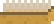
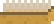

Step 1 : Nettoyer les tags = il faut une brosse "imbibée". Ce mélange se réalise en pulvérisant de la javel et en versant du bicarbonate sur la brosse. Il suffira ensuite de brosser les tags.
NB : La brosse peut se nettoyer dans le seau ensuite.
Step 2 : Ramasser les cacas = il faut utiliser une pelle (vide de préférence). Une fois ramassé avec la pelle, le caca doit être versé dans la poubelle.
Step 3 : Nettoyer la pisse = il faut une éponge imbibée de javel pour la pisse sur la cuvette et le couvercle. La pisse au sol doit être nettoyées avec un seau javelisé.
NB : Nettoyez la pisse sur la cuvette avant de vous attaquer au nettoyage complet de la cuvette.
NB : L'éponge peut être rincée dans le seau.
Step 4 : La moisissure = à nettoyer en pulvérisant de la javel (avec le pulvérisateur), puis en passant la brosse dessus. Utilisez la brosse de WC pour brosser la moisissure en cuvette.
NB : Si du produit est déposé sur la brosse, il sera impossible de brosser la moisissure. Rincez la brosse dans le seau pour enlever le produit.
Step 5 : Enlever le calcaire = il faut pulvériser du vinaigre blanc, verser du bicarbonate et brosser.
Attention : le bicarbonate ne peut être versé que dans la cuvette. Pour le couvercle et le pied des WC, versez le bicarbonate sur la brosse puis brossez (après pulvérisation de vinaigre blanc).
Step 6 : Nettoyage du sol = versez de la javel dans le seau et amenez ce dernier sur le sol sale. Le balais magique fera le reste.
NB ULTIME : Si vous souhaitez mettre de la javel dans votre pulvérisateur mais qu'il reste du vinaigre blanc, ou inversement, vous devez vider le contenu restant dans la bouteille de produit adequat.